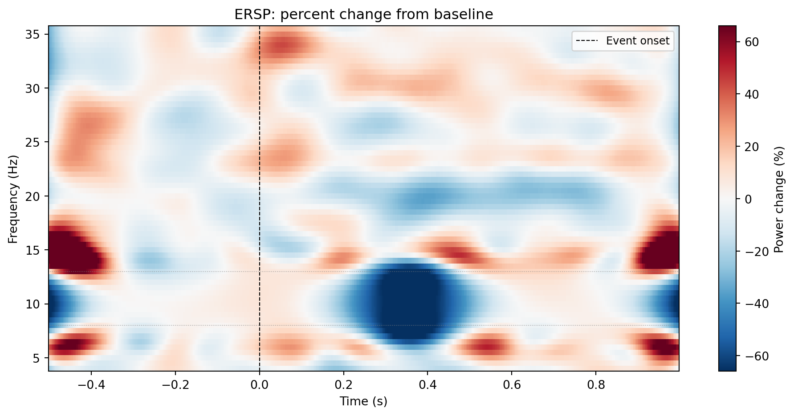

What ERSP is, baseline correction modes (percent change, dB, z-score), computing ERSP from MNE AverageTFR objects, plotting time-frequency maps, and interpreting ERD/ERS patterns.
Published
31 March 2026
Modified
31 March 2026
Why this topic matters
Raw time-frequency power tells you how strong a particular oscillation is at a given moment, but it does not tell you whether that power level is unusual. Is 5 \(\mu V^2\) of alpha power at 300 ms post-stimulus a lot or a little? The answer depends on how much alpha power was present before the stimulus arrived. ERSP (event-related spectral perturbation) answers this question by expressing power at each time-frequency point relative to a baseline period.
ERSP is the time-frequency counterpart of the event-related potential (ERP). Where the ERP shows how average voltage changes after an event, ERSP shows how average oscillatory power changes. It reveals phenomena that ERPs cannot capture, such as alpha desynchronisation during visual processing or beta rebound after a movement. These oscillatory dynamics are central to modern EEG research on perception, motor control, attention, and clinical disorders.
What ERSP measures
ERSP quantifies the change in spectral power at each frequency and time point, averaged across trials, relative to a pre-event baseline. The procedure is:
Epoch the continuous data around events (e.g., stimulus onset).
Compute a time-frequency representation (TFR) for each epoch, typically using Morlet wavelets.
Average the power across epochs. This gives you an AverageTFR object in MNE.
Apply baseline correction: express each time-frequency point as a change from the pre-stimulus baseline.
The baseline correction step is what transforms raw power into ERSP. Without it, you are looking at absolute power, which varies enormously across participants and frequencies (low frequencies have much more power than high frequencies, simply because of the 1/f spectrum).
Baseline correction modes
There are several ways to express power relative to baseline. Each has advantages and trade-offs.
where \(P(t, f)\) is the power at time \(t\) and frequency \(f\), and \(\bar{P}_{\text{base}}(f)\) is the average power at frequency \(f\) during the baseline window.
Percent change is intuitive: a value of -50 means power dropped by half compared to baseline. It is easy to interpret, but it can give very large values at frequencies where baseline power is low (because you are dividing by a small number).
In MNE: power.apply_baseline(baseline=(-0.5, 0), mode="percent")
The ratio mode divides power by the baseline mean without subtracting first. A value of 1.0 means no change, values above 1.0 indicate an increase, and values below 1.0 indicate a decrease. This is less commonly used in publications but can be convenient for multiplicative comparisons.
In MNE: power.apply_baseline(baseline=(-0.5, 0), mode="ratio")
The decibel (dB) scale compresses the dynamic range and makes increases and decreases symmetric. A doubling of power is about +3 dB, and a halving is about -3 dB. This symmetry is useful for visualisation: on a linear scale, a doubling (+100%) looks much larger than a halving (-50%), even though they represent the same magnitude of change in opposite directions.
The dB scale also reduces the influence of the 1/f spectrum, making it easier to compare effects across frequencies. This is probably the most widely used baseline correction mode in the literature.
In MNE: power.apply_baseline(baseline=(-0.5, 0), mode="logratio")
where \(\sigma_{\text{base}}(f)\) is the standard deviation of power at frequency \(f\) during the baseline window.
Z-scoring normalises by the variability of the baseline, not just its mean. A z-score of 2.0 means the power is two standard deviations above the baseline mean. This is useful when you want to know whether a change is “unusual” relative to the natural fluctuations in baseline power. It also puts all frequencies on the same scale, since each frequency is normalised by its own variability.
In MNE: power.apply_baseline(baseline=(-0.5, 0), mode="zscore")
Which mode should you use?
There is no single best answer. Here are some guidelines:
Percent change is good for presentations and talks because it is immediately interpretable.
dB (logratio) is the most common choice in publications. It treats increases and decreases symmetrically and compresses the dynamic range.
Z-score is useful when you want to account for baseline variability, or when you plan to compare effects across frequencies that have very different baseline power levels.
Ratio is occasionally useful but less common.
Whatever mode you choose, report it clearly in your methods section. Different modes can produce different visual impressions from the same data.
ERD and ERS
Two of the most important patterns in ERSP are event-related desynchronisation (ERD) and event-related synchronisation (ERS).
Event-related desynchronisation (ERD)
ERD is a decrease in oscillatory power relative to baseline. It appears as negative values (blue regions) on ERSP maps. The term “desynchronisation” comes from the idea that when neurons in a cortical area become engaged in processing, they stop oscillating in synchrony and instead fire more independently. The synchronous oscillation breaks down, and the measured power drops.
The best-known examples:
Alpha ERD over occipital cortex when the eyes open or a visual stimulus appears. The posterior alpha rhythm suppresses because visual cortex becomes active.
Beta ERD over motor cortex during movement preparation and execution. Beta power drops about 500-1000 ms before movement onset and stays low during the movement.
Mu ERD (the sensorimotor alpha rhythm, ~10 Hz) over central electrodes during movement or even during observation of someone else’s movement.
Event-related synchronisation (ERS)
ERS is an increase in oscillatory power relative to baseline. It appears as positive values (red regions) on ERSP maps. ERS indicates that a population of neurons has become more synchronised.
Common examples:
Beta ERS (beta rebound) over motor cortex after a movement ends. Beta power increases above baseline levels for several hundred milliseconds. This is one of the most reliable ERS findings.
Gamma ERS in sensory cortices during stimulus processing. Brief bursts of gamma synchronisation are associated with active perceptual processing.
Theta ERS over frontal midline electrodes during working memory tasks and error processing.
The combination of ERD during a task and ERS after the task is a typical pattern. For a motor task, you see beta ERD from about -500 ms to +500 ms around movement, followed by a beta rebound (ERS) peaking around 500-1000 ms after movement ends.
Computing ERSP in MNE
In MNE, the standard workflow is:
import mneimport numpy as np# Assume `epochs` is your preprocessed Epochs object# with a baseline period from -0.5 to 0 s# 1. Compute time-frequency representation with Morlet waveletsfreqs = np.arange(4, 40, 1) # 4 to 39 Hzpower = mne.time_frequency.tfr_morlet( epochs, freqs=freqs, n_cycles=freqs /2, return_itc=False, average=True)# 2. Apply baseline correctionpower.apply_baseline(baseline=(-0.5, 0), mode="percent")# 3. Plot the ERSPpower.plot([0], title="ERSP: percent change from baseline")
You can swap mode="percent" for any of the other modes described above.
Choosing the baseline window
The baseline window is the time period you treat as “normal” (pre-event activity). Choosing it well is important:
Use a pre-stimulus interval. The baseline should come before the event of interest, so it is not contaminated by the event-related response. A common choice is -500 ms to 0 ms (i.e., the half-second before stimulus onset).
Avoid edge artefacts. Wavelet convolution produces artefacts at the edges of the epoch. If your epoch starts at -1.0 s, the first 200-300 ms might be unreliable (depending on the wavelet length). Start your baseline after the edge artefact zone.
Make sure the baseline is clean. If the baseline period contains artefacts, transient responses to previous stimuli, or anticipatory activity, the baseline estimate will be wrong, and the ERSP will be distorted. With short inter-trial intervals, the baseline may overlap with the response to the previous trial.
Use the same baseline for all conditions. If you compare ERSP between conditions, the baseline window should be the same. Otherwise, differences might reflect baseline differences rather than genuine post-event effects.
A practical tip: compute ERSP with and without baseline correction, and inspect both. If you see something odd in the ERSP, checking the raw power map can help you determine whether the problem is in the post-event activity or in the baseline.
Statistical testing of ERSP
ERSP maps are rich but also high-dimensional: you have values at every combination of time point and frequency. Testing each pixel independently would involve thousands of comparisons, leading to massive multiple-comparison problems.
The standard approach is cluster-based permutation testing (Maris and Oostenveld, 2007). The idea is:
At each time-frequency point, compute a test statistic (e.g., a t-value comparing two conditions).
Threshold the map to find points that exceed a critical value.
Group adjacent supra-threshold points into clusters.
Sum the test statistics within each cluster to get a cluster-level statistic.
Build a null distribution by permuting condition labels across participants and repeating steps 1-4 many times.
Compare the observed cluster statistics to the null distribution.
This approach controls the family-wise error rate across the entire time-frequency map without being overly conservative. MNE implements it in mne.stats.permutation_cluster_test() and related functions.
from mne.stats import permutation_cluster_1samp_test# Assume `ersp_data` is an array of shape (n_subjects, n_freqs, n_times)# containing ERSP values (e.g., percent change from baseline)t_obs, clusters, cluster_pv, H0 = permutation_cluster_1samp_test( ersp_data, n_permutations=1000, threshold=2.0, tail=0)
The threshold parameter sets the initial t-value threshold for forming clusters. The tail parameter controls whether you test for increases only (1), decreases only (-1), or both (0).
Working example: simulated alpha desynchronisation
The code below simulates epochs where alpha power drops between 200 and 500 ms after an event. It computes the time-frequency representation using Morlet wavelets from scipy, applies baseline correction, and plots the ERSP map. We use numpy, scipy, and matplotlib directly rather than MNE’s tfr_morlet, since that function requires MNE Epochs objects.
import numpy as npimport matplotlib.pyplot as pltfrom scipy.signal import hilbert# Parametersrng = np.random.default_rng(42)sfreq =256n_epochs =80epoch_duration =1.5# seconds: -0.5 to 1.0 sn_samples =int(sfreq * epoch_duration)times = np.linspace(-0.5, 1.0, n_samples, endpoint=False)# Frequencies for the time-frequency decompositionfreqs = np.arange(4, 36, 0.5)n_freqs =len(freqs)# Number of wavelet cycles (scales with frequency)n_cycles = freqs /2.0# Generate simulated epochsepochs_data = np.zeros((n_epochs, n_samples))for ep inrange(n_epochs):# Pink noise background white = rng.standard_normal(n_samples) freqs_fft = np.fft.rfftfreq(n_samples, d=1.0/ sfreq) freqs_fft[0] =1.0 pink_filter =1.0/ np.sqrt(freqs_fft) pink = np.fft.irfft(np.fft.rfft(white) * pink_filter, n=n_samples) pink = pink / pink.std() *0.8# Alpha oscillation (10 Hz) present throughout the epoch phase = rng.uniform(0, 2* np.pi) alpha =1.5* np.sin(2* np.pi *10* times + phase)# Create a suppression window: alpha drops between 200 and 500 ms suppression = np.ones(n_samples) mask_suppress = (times >=0.2) & (times <=0.5)# Smooth suppression using a raised cosine taper suppress_idx = np.where(mask_suppress)[0] n_suppress =len(suppress_idx) taper =0.5* (1- np.cos(np.pi * np.arange(n_suppress) / n_suppress))# Suppress to 30% of original amplitude suppression[suppress_idx] =1.0-0.7* np.sin( np.pi * np.arange(n_suppress) / n_suppress ) alpha_suppressed = alpha * suppression epochs_data[ep] = pink + alpha_suppressed# Compute time-frequency representation using Morlet wavelets# We convolve each epoch with wavelets at each frequencytfr_power = np.zeros((n_epochs, n_freqs, n_samples))def make_morlet(sfreq, freq, n_cycles):"""Create a complex Morlet wavelet.""" sigma_t = n_cycles / (2.0* np.pi * freq) t_len =int(6* sigma_t * sfreq)if t_len %2==0: t_len +=1 t = np.arange(-t_len //2, t_len //2+1) / sfreq wavelet = np.exp(2j* np.pi * freq * t) * np.exp(-t**2/ (2* sigma_t**2)) wavelet /= np.sqrt(np.sum(np.abs(wavelet) **2))return waveletfor fi, (freq, nc) inenumerate(zip(freqs, n_cycles)): wavelet = make_morlet(sfreq, freq, nc)for ep inrange(n_epochs):# Convolve signal with wavelet analytic = np.convolve(epochs_data[ep], wavelet, mode="same") tfr_power[ep, fi, :] = np.abs(analytic) **2# Average across epochsavg_power = tfr_power.mean(axis=0) # shape: (n_freqs, n_samples)# Apply baseline correction (percent change)# Baseline: -0.4 to -0.1 s (avoiding very edges)baseline_mask = (times >=-0.4) & (times <=-0.1)baseline_power = avg_power[:, baseline_mask].mean(axis=1, keepdims=True)ersp = (avg_power - baseline_power) / baseline_power *100# Plot the ERSPfig, ax = plt.subplots(figsize=(10, 5))# Determine symmetric colour limitsvlim = np.percentile(np.abs(ersp), 97)im = ax.pcolormesh( times, freqs, ersp, cmap="RdBu_r", vmin=-vlim, vmax=vlim, shading="auto")ax.set_xlabel("Time (s)")ax.set_ylabel("Frequency (Hz)")ax.set_title("ERSP: percent change from baseline")ax.axvline(0, color="k", linestyle="--", linewidth=0.8, label="Event onset")ax.axhline(8, color="grey", linestyle=":", linewidth=0.6, alpha=0.7)ax.axhline(13, color="grey", linestyle=":", linewidth=0.6, alpha=0.7)ax.legend(loc="upper right", fontsize=9)cbar = fig.colorbar(im, ax=ax, label="Power change (%)")plt.tight_layout()plt.show()

Simulated ERSP showing alpha desynchronisation (200-500 ms post-event) as a blue region in the 8-13 Hz range.
The plot should show a blue region (negative percent change) in the alpha range (8-13 Hz) between approximately 200 and 500 ms after event onset. This is the simulated alpha desynchronisation: the 10 Hz oscillation was suppressed during that window, and the ERSP captures this as a power decrease relative to the pre-event baseline.
The rest of the time-frequency map should be close to zero (white or light colours), because we did not inject any other systematic power changes. Some noise is expected, especially at the edges of the epoch where the wavelet convolution produces artefacts.
Key takeaways
ERSP expresses oscillatory power relative to a pre-event baseline, revealing event-related power changes that raw power maps cannot show.
Baseline correction mode matters: percent change is intuitive, dB (logratio) is symmetric and widely used, z-score accounts for baseline variability. Report your choice in the methods.
ERD (power decrease) and ERS (power increase) are the two main patterns. Alpha ERD during stimulation and beta rebound after movement are classic examples.
Choose a clean pre-stimulus baseline window, and use the same window for all conditions.
For statistical testing of ERSP, cluster-based permutation tests control the multiple-comparison problem across the time-frequency map.
Always inspect both the raw power map and the ERSP. If the ERSP looks odd, the baseline might be contaminated.